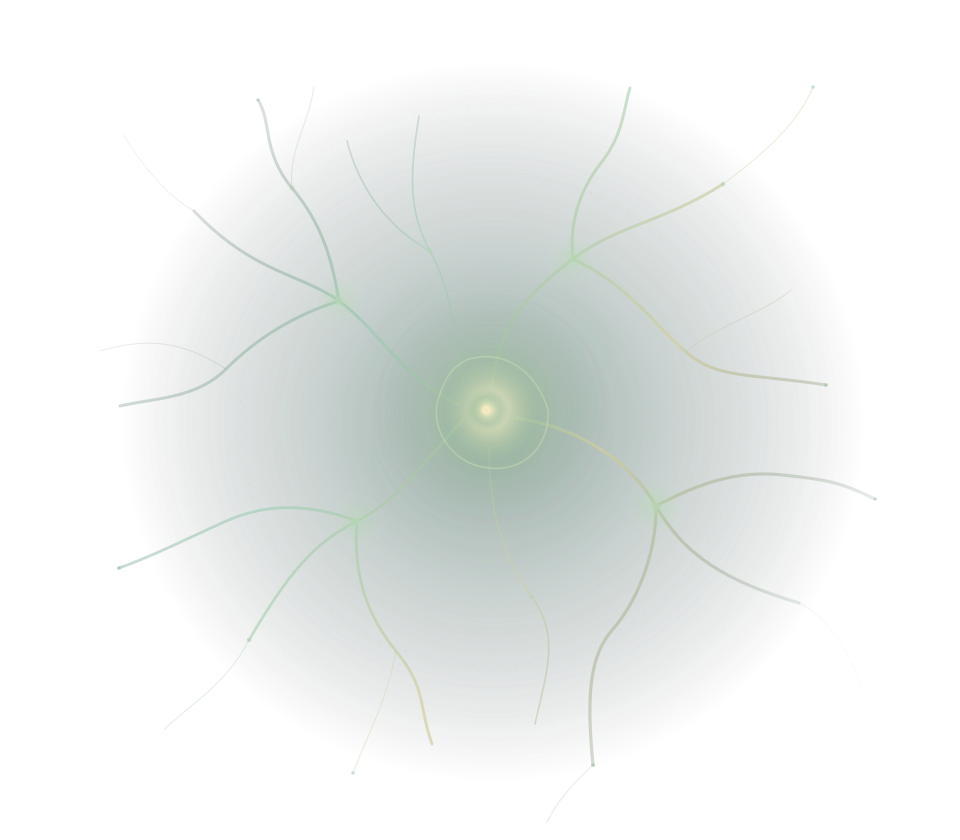

Bio-inspired simulation
Computational experiments designed to explore neural activity and adaptive behaviour in controlled model environments.
INDEPENDENTLY DEVELOPED / PROPRIETARY SOFTWARE
BIND-AI is a developed computational-neuroscience research platform for exploring bio-inspired neural dynamics through structured simulation and evidence-conscious experimentation.
A proprietary technology asset with documented software-validation history and potential for further research-tooling development.

THE RESEARCH OPPORTUNITY
Neural-system research faces a recurring challenge: exploring intricate, interacting behaviours while keeping computational observations separate from biological claims.
BIND-AI offers a software foundation for controlled simulation studies and interpretable, repeatable research workflows. For a prospective acquirer, the opportunity lies in developing this foundation into a broader research and experimentation platform.
WHAT HAS BEEN DEVELOPED
A developed simulation platform supporting research activity across neural dynamics and structured evidence interpretation. Descriptions here are deliberately high-level.
Computational experiments designed to explore neural activity and adaptive behaviour in controlled model environments.
Structured research comparisons that help distinguish model conditions, observed differences and interpretation limits.
Reproducible workflows with attention to data provenance, qualification boundaries and uncertainty.
DEVELOPMENT MATURITY
BIND-AI is an implemented research-software asset, not merely a product concept. Its technical records distinguish closed software qualification from ongoing development and from unproven scientific interpretations.
Deeper substantiation may be considered during confidential technical due diligence.
CURRENT SOFTWARE FOUNDATION
Executable research functionality and supporting software artefacts are documented in the private development record.
RETAINED EVIDENCE
A completed software-validation baseline is recorded for v2.1. This supports bounded engineering claims, not independent scientific or clinical validation.
LATEST DEVELOPMENT
Additional work is implemented in a subsequent candidate version; its final canonical release qualification remains outstanding in the reviewed record.
WHY AN ACQUIRER MAY CARE
Potential strategic fit for organizations investing in computational-neuroscience tools, research software, simulation systems or exploratory AI research.
Extend an existing computational foundation into richer experimental workflows, analysis experiences or research infrastructure.
Investigate broader experimental scope, performance optimization and responsible integration into research environments.
Consider future mechanistic simulation studies in adjacent scientific domains, subject to domain-specific evidence and validation.
Development outlook, not delivered functionality: these opportunities are prospective research and product directions, not representations of currently validated commercial applications.
PROPRIETARY SOFTWARE ACQUISITION
A QUALIFIED CONVERSATIONThe potential transaction concerns transferable first-party software rights and specifically agreed deliverables. Third-party software and research data remain subject to their separate rights and licence conditions.
Commercial terms, asset scope, ownership documentation and technical substantiation require confidential review and a definitive agreement. This presentation is not a valuation, legal title opinion or offer of guaranteed performance.
Find TheArchitectMaxUse a suitable private communication channel for confidential enquiries. No purchase or sensitive transaction takes place on this website.